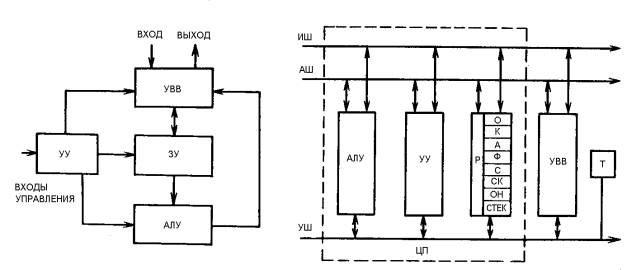
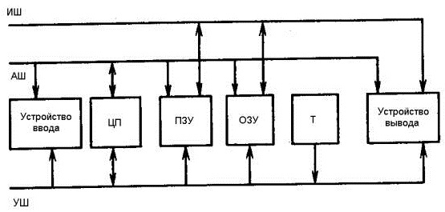
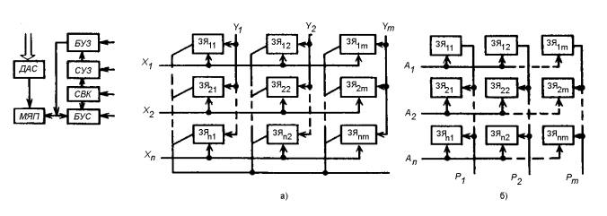
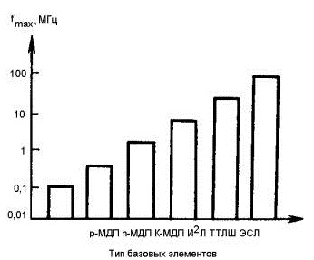
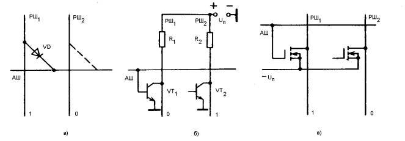
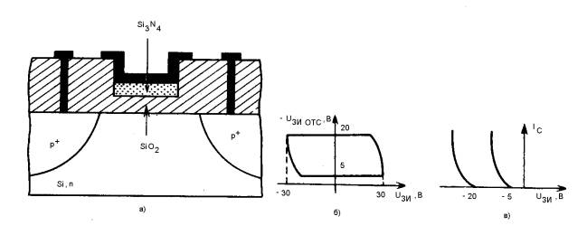
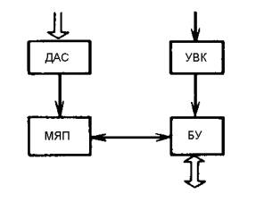
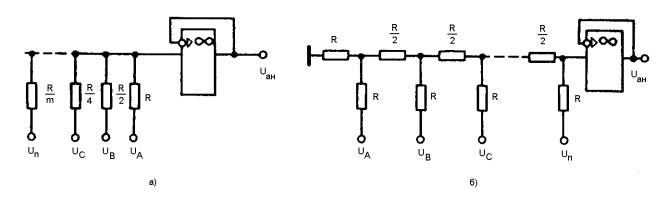
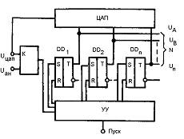
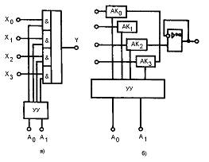

4. Большие и сверхбольшие интегральные схемы
4.1. Поколения микропроцессоров
4.2. Структуры микропроцессоров
4.3. МикроЭВМ
4.4. Запоминающие устройства
4.5. Оперативные запоминающие устройства
4.6. Постоянные запоминающие устройства
4.7. Репрограммируемые постоянные запоминающие устройства
4.8. Цифроаналоговые преобразователи
4.9. Аналого-цифровые преобразователи
4.10. Цифровые и аналоговые мультиплексоры.
4. Большие и сверхбольшие интегральные схемы
4.1. Поколения микропроцессоров
Развитие микроэлектроники привело в начале 70-х годов к появлению узкоспециализированных БИС, содержащих сотни и тысячи логических элементов и выполняющих одну или ограниченное число функций. Разнообразие типов цифровой аппаратуры требовало расширения номенклатуры БИС, что сопряжено с неприемлемыми с точки зрения экономики затратами. Выходом из этого положения явилась разработка и крупносерийное производство ограниченной номенклатуры БИС, выполняющих разнообразные функции, зависящие от внешних управляющих сигналов. Совокупности таких БИС образуют микропроцессорные комплекты и позволяют строить разнообразную цифровую аппаратуру любой сложности. Важнейшим суперкомпонентом комплекта БИС является микропроцессор (МП): универсальная стандартная БИС, функции которой определяются заданной программой.
Качественной особенностью МП является возможность их функциональной перестройки с помощью изменения внешней программы. По сути, МП представляют собой центральные процессорные элементы ЭВМ, выполненные в виде одной или нескольких БИС.
Главное отличие МП от других типов интегральных схем— способность к программированию последовательности выполняемых функций, т. е. возможность работы по заданной программе.
Таблица 4.1
| Обозначение МПК |
Базовая технология |
Число ИС в серии |
Разрядность, бит |
Быстродействие, мкс |
| К536 |
р-МДП |
12 |
8 |
10…30 |
| К580, КР580 |
n-МДП |
17 |
8 |
0,5; 0,4 |
| К581, КР581 |
n-МДП |
5, 8 |
8 |
0,4 |
| КР582 |
И2Л |
5 |
4 |
1,75 |
| К583 |
И2Л |
12 |
8 |
1,0 |
| К584, КР584 |
И2Л |
4 |
4 |
2,0 |
| К586 |
n-МДП |
4 |
16 |
0,5…1,2 |
| К587, КР587 |
КМДП |
4 |
4 |
2,0 |
| К588, КР588 |
КМДП |
19 |
16 |
1,2 |
| К589 |
ТТЛШ |
10 |
2 |
0,1 |
| 1604 |
КМДП/КНС |
6 |
4 |
0,6 |
| К 1800 |
ЭСЛ |
9 |
4 |
0,03 |
| К1801 |
n-МДП |
5 |
16 |
0,2 |
| КР1802 |
ТТЛШ |
13 |
8 |
0,15 |
| КР1803 |
p-МДП |
4 |
4 |
33 |
| К1804 |
ТТЛШ |
18 |
4 |
0,1 |
| КБ1805 |
КМДП/КНС |
9 |
4 |
0,6 |
| КР1808 |
И2Л |
9 |
8 |
30 |
| 1809 |
ЭСЛ |
7 |
16 |
0,03 |
| К1810 |
n-МДП |
3 |
16 |
0,4 |
| КР1811 |
р-МДП |
5 |
8 |
0,3 |
| 1814 |
р-МДП |
4 |
4 |
3,0 |
| 1815 |
И2И |
7 |
16 |
0,12 |
| U83-K183 |
n-МДП |
4 |
8 |
1,4 |
Внедрение микропроцессоров позволяет изменять принцип проектирования цифровой аппаратуры. Раньше для реализации нового алгоритма требовалась новая разработка аппаратуры. Теперь при использовании МП для реализации нового алгоритма не требуется новой аппаратуры, достаточно изменить соответствующим образом программу его работы. Указанная особенность и объясняет огромный интерес, проявляемый у нас в стране и за рубежом к микропроцессорным устройствам.
Короткий интервал времени (1971—1975 гг.) характеризуется появлением МП самых разнообразных модификаций. В настоящее время число типов МП в мире превышает 1000.
Параметры основных типов отечественных микропроцессорных комплектов (МПК) приведены в табл. 4.1.
4.2. Структуры микропроцессоров
Упрощенная структурная схема МП приведена на рис. 4.1.

Рисунок 4.1 Рисунок 4.2
Микропроцессор содержит арифметически-логическое устройство АЛУ, запоминающие устройства ЗУ для оперативного (ОЗУ) и постоянного (ПЗУ) хранения информации, устройство управления, осуществляющее прием, расшифровку команд и задающее последовательность их выполнения, а также устройства ввода-вывода (УВВ) информации, с помощью которого вводятся исходные и выводятся полученные в результате работы МП данные.
Микропроцессоры обрабатывают 2-, 4-, 8-, 16-, 32-разрядные числа, выполняют 30...500 команд сложения, вычитания, сдвига, логических операций. Четырех- и восьмиразрядные МП представляют собой БИС с размерами кристалла 5 х 5 х 0,2 мм.
Обобщенная структурная схема МП приведена на рис. 4.2. Арифметическо-логическое устройство АЛУ совершает различные арифметические и логические операции над числами и адресами, представленными в двоичном коде. Состав операций, выполняемых АЛУ, определен списком инструкций (набором команд). В набор команд входят, как правило, арифметические и логические сложения и умножения, сдвиги, сравнения и т. п. Арифметические операции выполняются в соответствии с правилами двоичной арифметики. Логические операции выполняются по правилам булевой алгебры.
В состав АЛУ входят сумматор, сдвигатели, регистры и другие элементы.
Устройство управления управляет работой АЛУ и всех других блоков МП. В УУ поступают команды из блока памяти. Здесь они преобразуются в двоичные сигналы управления для выполнения данной команды. Работа УУ синхронизируется таймером, распределяющим процесс выполнения команды во времени. Команда представляет собой двоичное слово из 8, 16, 24 разрядов и более (до 64), часть которых представляет код операции, а остальные распределены между адресами данных (операндов) в памяти. Команда с 16-разрядной адресной частью позволяет обращаться к 216—1=65635 ячейкам памяти. Этого количества, как правило, вполне достаточно для задач, решаемых МП. Такое обращение к памяти называется прямой адресацией.
Однако чаще применяется косвенная адресация, которая необходима, когда разрядность адресной части меньше, чем требуется. В этом случае, адресация проводится в два этапа. На первом этапе по адресу, содержащемуся в команде, выбирается ячейка, содержащая адрес другой ячейки, из которой на втором этапе выбирается операнд. Команда при косвенном методе адресации должна содержать один разряд признака операнда, состояние которого определяет, что выбирается на данном этапе: адрес операнда или сам операнд? Конечно, косвенный способ адресации медленнее прямого. Он позволяет за счет наращивания объема памяти адресов обращаться к числу операндов в 2n раза (где n—разрядность адресной части команды) большему, чем при прямом способе.
Управляющее устройство любую операцию согласно коду, заданному командным словом, распределяет на последовательность фаз (фазы адресации и фазы выполнения), называемую циклом. Из-за ограниченной разрядности МП действия над операндами большой разрядности могут выполняться за два и более циклов. Очевидно, что это в 2 и более раз снижает быстродействие МП. Отсюда следует интересный и практически важный вывод: быстродействие МП находится в обратной зависимости от точности, однозначно определяемой разрядностью операндов.
Микропроцессор содержит блок регистров (Р). Рабочие регистры МП физически представляют собой одинаковые ячейки памяти, служащие для сверхоперативного хранения текущей информации (СОЗУ). По выполненным функциям Р содержит группы, связанные с определенными элементами структуры МП.
Два регистра операндов (О) в течение выполнения операции в АЛУ хранят два двоичных числа. По окончании операции в первом регистре число заменяется результатом, т. е. как бы накапливается (отсюда и название регистра «аккумулятор»). Содержимое второго регистра операндов заменяется в следующей операции другим операндом, в то время как содержимое аккумулятора может быть сохранено по ряду специальных команд.
Регистр команд (К) хранит в течение выполнения операции несколько разрядов командного слова, представляющих собой код этой операции. Адресная часть командного слова содержится в регистре адреса А.
После реализации какой-либо операции разрядность результата может оказаться больше разрядности каждого из операндов, что регистрируется состоянием специального флагового регистра, иногда называемого триггером переполнения. В процессе отладки составленной программы программист должен следить за состоянием флагового регистра и в случае необходимости устранять возникшее переполнение.
Очень важными в системе команд МП являются команды переходов к выполнению заданного участка программы по определенным признакам и условиям, так называемые команды условных переходов. Наличие таких команд определяет уровень «интеллектуальности» МП, так как характеризует его способность принимать альтернативные решения и выбирать различные пути в зависимости от возникающих в ходе решения условий. Для определения таких условий служит специальный регистр состояний (С), фиксирующий состояние МП в каждый момент выполнения программы и посылающий в УУ сигнал перехода к команде, адрес которой содержится в специальном регистре, называемом счетчиком команд (СК). Команды в памяти записываются в определенной программной последовательности по адресам, образующим натуральный ряд, т. е. адрес следующей команды отличается от адреса предыдущей на единицу. Поэтому при реализации непрерывной последовательности команд адрес следующей команды получается путем прибавления к содержимому СК единицы, т. е. образуется в результате счета. Назначение СК—нахождение необходимых адресов команд, причем при наличии в программе команд перехода очередная команда может не иметь следующего адреса. В таком случае в СК записывается адресная часть команды перехода.
Регистры общего назначения (РОН) используются для хранения промежуточных результатов, адресов и команд, возникающих в ходе выполнения программы, и могут связываться по общим шинам с другими рабочими регистрами, а также со счетчиками команд и блоком ввода-вывода информации. В МП обычно содержите» 10...16 РОН разрядностью 2...8 бит каждый. Количество РОН косвенно характеризует вычислительные возможности МП.
Особый интерес представляет наличие у многих моделей МП группы регистров, имеющих магазинную или стековую организацию — так называемые стеки. Стек позволяет без обмена с памятью организовать правильную последовательность выполнения различных последовательностей арифметических действий. Операнд или другая информация может посылаться в стек без указания адреса, поскольку каждое помещаемое в него слово занимает сначала первый регистр, затем «проталкивается» последующими словами каждый раз на регистр глубже. Вывод информации происходит в обратном порядке, начиная с первого регистра, в котором хранится слово, посланное в стек последним. При этом последние регистры очищаются.
Блоки АЛУ, УУ, Р образуют центральный процессор (ЦП), входящий в состав, любой ЭВМ: выделенный на рис. 4.2 штриховой линией. В состав МП может, входить таймер (Т), использующий навесной времязадающий конденсатор или кварцевый резонатор. Таймер — сердце МП, поскольку его работа определяет динамику всех информационных, адресных и управляющих сигналов и синхронизирует работу УУ, а через него и других элементов структуры. Частота синхронизации, называемая тактовой, выбирается максимальной и ограничивается только задержками прохождения сигналов, определяемыми в основном технологией изготовления БИС. Скорость выполнения микропроцессором программы прямо, пропорциональна тактовой частоте.
В составе МП может быть устройство ввода-вывода (УВВ) для обмена информацией между МП и другими устройствами.
Сигналы трех видов — информационные, адресные и управляющие — могут передаваться по одной, двум или трем шинам. Шина представляет собой группу линий связи, число которых определяет разрядность одновременно передаваемой по ней двоичной информации.
Число
линий информационной шины (ИШ) определяет объем информации,
получаемой или передаваемой МП за одно обращение к памяти, к
устройству ввода или вывода. Большинство МП имеет 8-шиниую информационную
магистраль. Это позволяет за один раз принять восемь
двоичных единиц информации (1 байт). Один байт информация может
содержать один из 256 возможных символов алфавита источника
информации или один из 256 возможных кодов операций. Такое количество
допустимых символов и типов операций для большинства применений
является достаточным.
Существуют МП, содержащие
16 и 32 шины в информационной магистрали.
Число линий в шине управления (VIII) зависит от порядка взаимодействия между МП, ЗУ, внешними УВВ информации. Обычно шины управления содержат 8... 16 линий.
4.3. МикроЭВМ
Важным итогом развития программируемых БИС явилась разработка микроЭВМ. Если микроЭВМ создается на одной интегральной микросхеме, то она называется однокристальной. Упрощенная структурная схема микроЭВМ приведена на рис. 4.3.

Рисунок 4.3
Как видно, она содержит центральный процессор ЦП (имеющий устройство аналогично рассмотренному выше МП), ПЗУ, ОЗУ и устройства ввода и вывода информации. Устройство ввода содержит селектор адреса и так называемые порты ввода для считывания информации с гибкого диска, АЦП, телетайпа, перфоленты. Устройство вывода также содержит селектор адреса и порты вывода информации (дисплею, печатающему устройству, устройству выхода на перфоленту, ЦАП).
Данные, поступающие обустройства ввода, передаются на адресную магистраль обычно в виде 8-разрядных параллельных или последовательных кодовых сигналов через порт ввода. Селектор адреса определяет порт ввода, который передает данные на информационную магистраль в некоторый момент времени. Основная память состоит из ПЗУ и ОЗУ. Постоянное ЗУ используется как память программы, которую разработчик микроЭВМ заранее запрограммировал в соответствии с требованием пользователя. Для различных программ используют различные части ПЗУ.
Памятью данных в микроЭВМ является ОЗУ. Информация, хранящаяся в ОЗУ, стирается, когда отключается напряжение питания. Данные, поступающие в ОЗУ, обрабатываются в ЦП в соответствии с программой, хранящейся в ПЗУ. Результаты операций в ЦП хранятся в специальном накопителе информации, называемом аккумулятором или ОЗУ. Они могут быть выведены по команде через один из портов вывода на устройства вывода, подсоединенные к этому порту. Требуемый порт вывода выбирается с помощью схемы селекции адреса.
4.4. Запоминающие устройства
Важнейшими блоками цифровой аппаратуры являются запоминающие устройства (блоки памяти), которые подразделяются на внешние и внутренние. Внешние ЗУ до сих пор реализуются на магнитных лентах и магнитных дисках. Они обеспечивают неопределенно длительное сохранение информации при отсутствии! питания, а также практически любую необходимую емкость памяти. Внутренние ЗУ являются неотъемлемой частью цифровой аппаратуры. Раньше они выполнялись на основе ферритовых сердечников с прямоугольной петлей гистерезиса. Теперь в связи с разработкой ИС имеются широкие возможности создания полупроводниковых ЗУ.
К устройствам памяти относятся следующие виды запоминающих устройств:
Оперативные запоминающие устройства, выполняющие запись и хранение произвольной двоичной информации. В цифровых системах ОЗУ хранят массивы обрабатываемых данных и программы, определяющие процесс текущей обработки информации. В зависимости от назначения и структуры ОЗУ имеют емкость 102…107бит.
Постоянные запоминающие устройства, служащие для хранения информации, содержание которой не изменяется в ходе работы системы, например используемые в процессе работы стандартные подпрограммы и микропрограммы, табличные значения различных функций, константы и др. Запись информации в ПЗУ производится заводом-изготовителем БИС.
Программируемые постоянные запоминающие устройства являются разновидностью ПЗУ, отличающиеся возможностью однократной записи информации по заданию заказчика.
Репрограммируемые ПЗУ, отличающиеся от обычных возможностью многократной электрической сменой информации, осуществляемой заказчиком. Объем РПЗУ обычно составляет 102…105бит.
К устройствам постоянной памяти (ПЗУ, ППЗУ, РПЗУ) предъявляется требование сохранности информации при отключении питания.
Основными параметрами ЗУ являются: информационная емкость в битах; минимальный период обращения; минимально допустимый интервал между началом одного цикла и началом второго; максимальная частота обращения — величина, обратная минимальному периоду обращения; удельная мощность — общая мощность, потребляемая в режиме хранения, отнесенная к 1 биту; удельная стоимость одного бита информации — общая стоимость кристалла, поделенная на информационную емкость.
4.5. Оперативные запоминающие устройства
структура БИС ОЗУ приведена на рис. 4.4.

Рисунок 4.4 Рисунок 4.5
Основным узлом является матрица ячеек памяти (МЯП), состоящая из n строк с т запоминающими ячейками (образующими разрядное слово) в каждой строке. Информационная емкость БИС памяти определяется по формуле N=nm бит.
Входы и выходы ячеек памяти подключаются к адресным АШ и разрядным РШ шинам. При записи и считывании осуществляется обращение (выборка) к одной или одновременно к нескольким ячейкам памяти. В первом случае используются двухкоординатные матрицы (рис. 4.5, а), во втором случае матрицы с пословной выборкой (рис. 4.5,6).
Дешифратор адресных сигналов (ДАС) при подаче соответствующих адресных сигналов осуществляет выбор требуемых ячеек памяти. С помощью РШ осуществляется связь МЯП с буферными усилителями записи (БУЗ) и считывания (БМС) информации. Схема управления записью (СУЗ) определяет режим работы БИС (запись, считывание, хранение информации). Схема выбора кристалла (СВК) разрешает выполнение операций записи-считывания данной микросхемы. Сигнал выборки кристалла обеспечивает выбор требуемой БИС памяти в ЗУ, состоящем из нескольких БИС.
Подача управляющего сигнала на вход СУЗ при наличии сигнала выборки кристалла на входе СВК осуществляет операцию записи. Сигнал на информационном входе БУЗ (1 или 0) определяет записываемую в ячейку памяти информацию. Выходной информационный сигнал снимается с БУС и имеет уровни, согласующиеся с серийными ЦИС.
Большие интегральные схемы ОЗУ стремятся на основе простейших элементов ТТЛ, ТТЛШ, МДП, КМДП, И2Л, ЭСЛ, модифицированных с учетом специфики конкретных изделий. В динамических ячейках памяти чаще всего используются накопительные емкости, а в качестве ключевых элементов — МДП транзисторы.
Выбор элементной базы определяется требованиями к информационной емкости и быстродействию БИС памяти. Наибольшей емкости достигают при использовании логических элементов, занимающих малую площадь на кристалле: и2л, МДП, динамических ЗЯ. Высоким быстродействием обладают БИС с логическими элементами, имеющими малые перепады логических уровней (ЭСЛ, И2Л), а также логические элементы ТТЛШ.
Частотные области применения БИС, использующих различные базовые технические решения, иллюстрирует рис. 4.6.

Рисунок 4.6
Благодаря развитию технологии и схемотехники быстродействие элементов непрерывно возрастает, поэтому границы раздела указанных областей с течением времени сдвигаются в область больших рабочих частот.
4.6. Постоянные запоминающие устройства
Схема ПЗУ аналогична схеме ОЗУ (см. рис. 4.4). Отличия состоят лишь в следующем:
ПЗУ используются для считывания информации;
в ПЗУ осуществляется выборка нескольких разрядов одного адреса одновременно (4, 8, 16 разрядов);
информация, записанная в ПЗУ, не может меняться, и в режиме выборки происходит только ее считывание.
Большие интегральные схемы ПЗУ подразделяются на программируемые изготовителем (с помощью специальных фотошаблонов) и программируемые заказчиком (электрически).

Рисунок 4.7
В ПЗУ используется матричная структура: строки образуются адресными шинами ДШ, а столбцы — разрядами РШ. Каждая АШ хранит определенный код: заданную совокупность логических 1 и 0. В МЯП, изображенной на рис. 4.7, а, однократная запись кода осуществляется с помощью диодов, которые присоединены между АЩ и теми РШ, на которых при считывании должна быть логическая 1. Обычно заказчику поставляют ПЗУ с матрицей, во всех узлах которой имеются диоды.
Суть однократного электрического программирования ППЗУ заключается в том, что пользователь (с помощью специального устройства—программатора) пережигает выводы — перемычки тех диодов, которые находятся в местах расположения логических 0. Пережигание выводов осуществляется путем пропускания через соответствующий диод тока, превышающего допустимое значение.
Диодные ПЗУ отличаются простотой, но имеют существенный недостаток, потребляют значительную мощность. Чтобы облегчить работу дешифратора, вместо диодов используют биполярные (рис. 4.7,6) и (рис. 4.7, в) транзисторы.
При использовании биполярных транзисторов АШ обеспечивает протекание базового тока, который в βб.т.+1 раз меньше эмиттерного, питающего РШ. Следовательно, существенно уменьшается необходимая мощность дешифратора.
Еще больший выигрыш обеспечивает применение МДП транзисторов, так как цепь затвора практически не потребляет мощности. Здесь используется не пережигание выводов, а отсутствие металлизации затвора у транзисторов, обеспечивающих считывание логических 0 в разрядной шине.
4.7. Репрограммируемые постоянные запоминающие устройства
Репрограммируемые ПЗУ являются наиболее универсальными устройствами памяти. Структурная схема РПЗУ аналогична схеме ОЗУ (см. рис. 4.4). Важной отличительной особенностью РПЗУ является использование в МЯП транзистора специальной конструкции со структурой «металл—нитрид—окисел—полупроводник» (МНОП). Принцип действия такой ячейки памяти основан на обратимом изменении порогового напряжения МНОП транзистора. Например, если сделать UЗИпор>UАШ, то транзистор не будет отпираться адресными импульсами (т. е. не участвует в работе). В то же время другие МНОП транзисторы, у которых UЗИпор<UАШ будут функционировать как обычные МДП транзисторы.
Структура МНОП транзистора с индуцированным каналом р-типа показана на рис. 4.8, а.

Рисунок 4.8
Здесь диэлектрик состоит из двух слоев: нитрида кремния (Si3N4) и окисла кремния (SiO2). Пороговое напряжение можно менять, подавая на затвор короткие (порядка 100 мкс) импульсы напряжения разной полярности, с большой амплитудой 30...50 В. При подаче импульса +30 В устанавливается пороговое напряжение UЗИпор= -5 В. Это напряжение сохраняется, если использовать транзистор или напряжения на затворе UЗИ=±10В. В таком режиме МНОП транзистор работает как обычный МДП транзистор с индуцированным каналом р-типа.
При подаче импульса -30 В пороговое напряжение принимает значение UЗИпор~20 В, как показано на рис. 4.8, 6 и в. При этом сигналы на входе транзистора UЗИ ± 10 В не могут вывести транзистор из закрытого состояния. Это явление используется в РПЗУ.
В основе работы МНОП транзисторов лежит накопление , заряда на границе нитридного и оксидного слоев. Это накопление есть результат неодинаковых токов проводимости в слоях. Процесс накопления описывается выражением dq/dt=Isio2 —Isi3n4. При большом отрицательном напряжении UЗИ на границе накапливается положительный заряд. Это равносильно введению доноров в диэлектрик и сопровождается увеличением отрицательного порогового напряжения. При большом положительном напряжении UЗИ на границе накапливается отрицательный заряд. Это приводит к уменьшению отрицательного порогового напряжения. При малых напряжениях UЗИ токи в диэлектрических слоях уменьшаются на 10...15 порядков, поэтому накопленный заряд сохраняется в течение тысяч часов, а, следовательно, сохраняется и пороговое напряжение.
Известна и другая возможность построения ячейки памяти для РПЗУ на основе МДП транзисторов с однослойным диэлектриком. Если прикладывать к затвору достаточно большое напряжение, то будет наблюдаться лавинный пробой диэлектрика, в результате чего в нем будут накапливаться электроны. При этом у транзистора изменится пороговое напряжение. Заряд электронов сохраняется в течение тысяч часов. Для того чтобы осуществить перезапись информации, нужно удалить электроны из диэлектрика. Это достигается путем освещения кристалла ультрафиолетовым светом, вызывающим фотоэффект: выбивание электронов из диэлектрика.
При использовании ультрафиолетового стирания удается существенно упростить схему РПЗУ. Обобщенная структурная схема РПЗУ с ультрафиолетовым стиранием (рис. 4.9) содержит кроме МЯП дешифратор адресных сигналов (ДАС), устройство выбора кристалла (УВК) и буферный усилитель (БУ) для считывания информации.

Рисунок 4.9
По приведенной структурной схеме выполнена, в частности, БИС РПЗУ с ультрафиолетовым стиранием типа К573РФ1 емкостью 8192 бита.
4.8. Цифроаналоговые преобразователи.
Назначение ЦАП — преобразование двоичного цифрового сигнала в эквивалентное аналоговое напряжение. Такое преобразование можно произвести с помощью резистивных цепей, показанных на рис. 4.10.

Рисунок 4.10
В ЦАП с двоично-весовыми резисторами (рис. 4.10, а) требуется меньшее число резисторов, однако при этом необходим целый ряд номиналов прецизионных сопротивлений. Аналоговое выходное напряжение Uан ЦАП определяется как функция двухуровневых входных напряжений:
Uан=(UA+2UB+4UC+…)/(1+2+4+...).
На цифровых входах UA, UB, UC, ... напряжение может принимать лишь два фиксированных значения, например, либо 0, либо 1. Для ЦАП, в котором используются резисторы R и R/2, требуется больше резисторов (рис. 4.10,6), но только с двумя номиналами. Аналоговое напряжение на выходе такого ЦАП определяется по формуле
Uан=(UA+2UB+4UC+…+mUn)/2n
где n — число разрядов ЦАП; т — коэффициент, зависящий от числа разрядов ЦАП.
Для обеспечения высокой точности работы резистивные цепи ЦАП должны работать на высокоомную нагрузку. Чтобы согласовать резистивные цепи с низкоомной нагрузкой, используют буферные усилители на основе операционных усилителей, показанные на рис. 4.10, а, б.
4.9. Аналого-цифровые преобразователи.
Назначение АЦП — преобразование аналогового напряжения в его цифровой эквивалент. Как правило, АЦП имеют более сложную схему, чем ЦАП, причем ЦАП часто является узлом АЦП. Обобщенная структурная схема АЦП с ЦАП в цепи обратной связи показана на рис. 4.11.

Рисунок 4.11
Выполненные по такой схеме АЦП находят широкое применение благодаря хорошим показателям по точности, быстродействию при сравнительной простоте и низкой стоимости.
В состав АЦП входят n-разрядный триггерный регистр результатов преобразования DD1—DDn, управляющий разрядами ЦАП; компаратор, связанный с устройством управления УУ и содержащий генератор тактовой частоты. Реализуя в УУ различные алгоритмы работы АЦП, получают различные характеристики преобразователя.
Используя рис. 4.11, рассмотрим принцип действия АЦП, предполагая, что в качестве триггерного регистра используется реверсивный счетчик. Реверсивный счетчик имеет цифровой выход, напряжение на котором возрастает от каждого тактового импульса, когда на входе счетчика «Прямой счет» высокий уровень напряжения, а на входе «Обратный счет» — низкий. И наоборот, напряжение на цифровом выходе при каждом тактовом импульсе уменьшается, когда на входе «Прямой счет» низкий, а на входе «Обратный счет» — высокий уровень напряжения.
Важнейшим узлом АЦП является компаратор (К), имеющий два аналоговых входа UЦАП и Uан и цифровой выход, подключенный через УУ к реверсивному счетчику. Если напряжение на выходе компаратора имеет высокий уровень, уровень на входе счетчика «Прямой счет» также будет высоким. И наоборот, когда выходное напряжение компаратора имеет низкий уровень, низким будет также и уровень на входе «Прямой счет».
Таким образом, в зависимости от того, высокий или низкий уровень на выходе компаратора, реверсивный счетчик считает соответственно в прямом или обратном направлении. В первом случае на входе UЦАП компаратора наблюдается ступенчато-нарастающее напряжение, а во втором — ступенчато-спадающее.
Поскольку компаратор работает без обратной связи, уровень его выходного напряжения делается высоким, когда напряжение на его входе Uан станет немного отрицательнее, чем на входе UЦАП. И наоборот, уровень его выходного напряжения становится низким, как только напряжение на входе Uан станет немного положительнее напряжения на входе UЦАП.
На вход UЦАП компаратора поступает выходное напряжение ЦАП, которое сравнивается с аналоговым входным напряжением,поступающим на вход Uан.
Если аналоговое напряжение Uан превышает напряжение, снимаемое с выхода ЦАП, реверсивный счетчик считает в прямом направлении, ступенями наращивая напряжение на входе UЦАП до значения напряжения на входе Uан. Если же Uан<UЦАП или становится таковым в процессе счета, напряжение на выходе компаратора имеет низкий уровень и счетчик считает в обратном направлении, вновь приводя UЦАП к Uан. Таким образом, система имеет обратную связь, которая поддерживает выходное напряжение ЦАП приблизительно равным напряжению Uан. Следовательно, выход реверсивного счетчика всегда представляет собой цифровой эквивалент аналогового входного напряжения. С выхода реверсивного счетчика считывается цифровой эквивалент аналогового входного сигнала АЦП.
4.10. Цифровые и аналоговые мультиплексоры.
В микропроцессорных системах, АЦП, ЦАП, а также в системах электронной коммутации широкое применение находят мультиплексоры: многоканальные коммутаторы (имеющие 4, 8, 16, 32, 64 входа и 1—2 выхода) с цифровым устройством управления. Простейшие мультиплексоры цифровых и аналоговых сигналов показаны на рис. 4.12, а и б соответственно.

Рисунок 4.11
Цифровой
мультиплексор (рис. 4.12, а) позволяет осуществлять последовательный
или произвольный опрос логических состояний источников сигналов
Х0, Х1, Х2,
Х3 и передачу результата опроса на выход Y. В зависимости
от логических уровней адресных сигналов А0,
А1 устройство управления обеспечивает соединение
выхода мультиплексора с одним из информационных входов, реализуя
алгоритм: Y=
 1
1
 0 Х0+
1
0 Х0+
1
 0 Х1+
0 Х1+
 1
1
 0 Х2+
0 Х2+
 1
0 Х3.
1
0 Х3.
Следует отметить, что логическое произведение адресных сигналов равно 1 только для того информационного входа, индекс которого совпадает с требуемым адресом. Например, если А1=1 и А2=0 то выход Y подключается к информационному входу Х2:Y = 0•1•Х0 + 0•0•Х1 + 1•1•Х2 + 1•0•Х3.
По указанному принципу строятся мультиплексоры на любое требуемое число информационных входов. Некоторые типы цифровых мультиплексоров допускают коммутацию и аналоговых информационных сигналов.
Однако лучшими показателями обладают аналоговые мультиплексоры, содержащие матрицу высококачественных аналоговых ключей (AK1...AK4), работающих на выходной буферный усилитель, цифровое УУ. Соединение узлов между собой иллюстрирует рис. 4.12,6.
Примером БИС аналогового мультиплексора является микросхема типа К591КН1, выполненная на основе МДП транзисторов. Она обеспечивает коммутацию 16 аналоговых источников информации на один выход, позволяя производить как адресацию, так и последовательную выборку каналов. При разработке БИС аналоговых мультиплексоров учитывают необходимость их совместимости с системой команд микропроцессоров.
Аналоговые мультиплексоры являются весьма перспективными изделиями для электронных коммутационных полей и многоканальных электронных коммутаторов связи, радиовещания и телевидения.